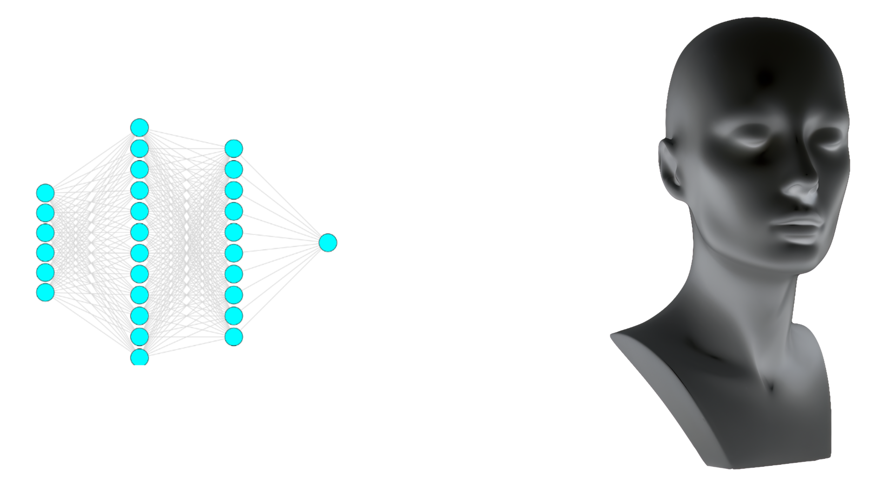
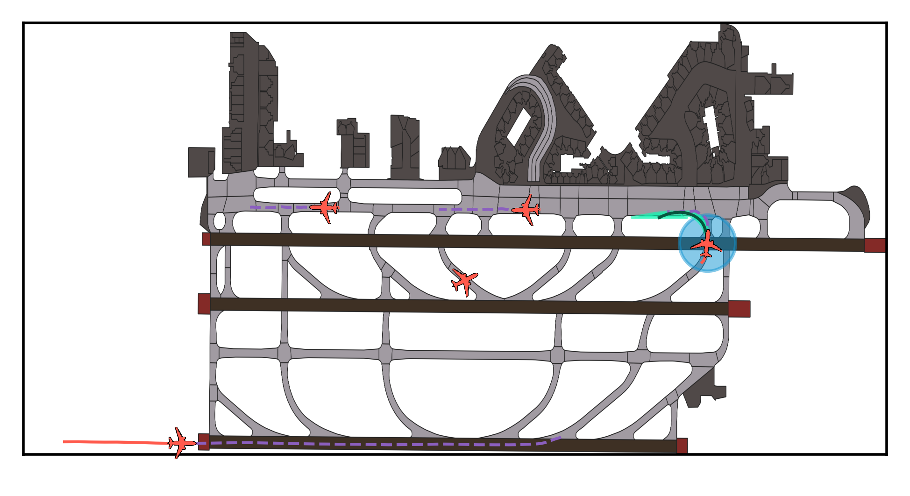
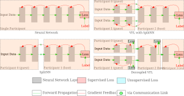
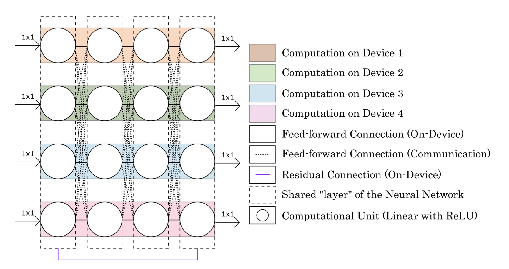

An Information-Theoretic Bridge Between Neural and Symbolic AI
Neural agents are great at System 1 thinking: fast, intuitive, statistical.
Not so much at System 2 reasoning, which is slow, deliberate and logical.
Our brains can learn from remarkably few samples and make interpretable, verifiable decisions based
on sound logical reasoning. The best of foundation models even after being trained on unfathomable
amounts of data are not remotely reliable, even with fancy feedback-loop-chain-of-thought prompt
tricks.
So how do we get there?
Optimizing over discrete logic typically implies a combinatorial search is needed somewhere--
probably NP hard, not good. Can we make things better by modeling probabilistic logical distributions?
Manuscript under preparation.

Amelia
Intent Prediction for Airport Surface Operations.
My role in this large-scale Boeing project was to come up with an efficient map-matching algorithm to
induce GIS information into a trajectory prediction model. Also, a way to use English rules via LLM
as a heuristic for procedural bias in Popper, an inductive logic programming system.

Entity Augmentation
Imagine a database whose columns belong to different organizations.
How do you learn something meaningful in this system? Sure, you could collect all the
features at a central location and use standard machine learning. But what if they don't share?
Vertical Federated Learning is intricately coordinated. You need to figure out rows everyone knows some features
for (without leaking the keys). Then, on every training iteration you need to arrange matters so that
everyone is passing their features pertaining to the same key, so that the aggregator knows what to
predict.
Or, you could just use Entity Augmentation.
GLOW @ IJCAI 2024 (Archival) and HoTDiML @ ICDCS 2025

Decoupled Vertical Federated Learning
Vertical Federated Learning is not easy.
All it takes is one connection or participant to fail and the whole thing crashes. Also, if one of
your participants is curious, they can learn a lot about others' data from gradients the aggregator
sends them. And of course there's the whole bore of entity alignment (and therefore limitations on
sample size). It's hard enough cross-silo. Forget about scaling up.
Try Decoupled Vertical Federated Learning instead.
arXiv (short version in SSL @ NIPS 2024)

Internet Learning
We're wasting the Internet by merely passing data around. Why don't we compute, too?
Internet Learning is a paradigm for learning over decentralized networks. Our baseline proposal is
a collaborative backpropagation over the whole network. But you are encouraged to propose something
better.
Learning on dynamic networks with unreliable and unavailable edge computation is not trivial. Here's
a first step towards fixing that.
LLW @ ICML 2023